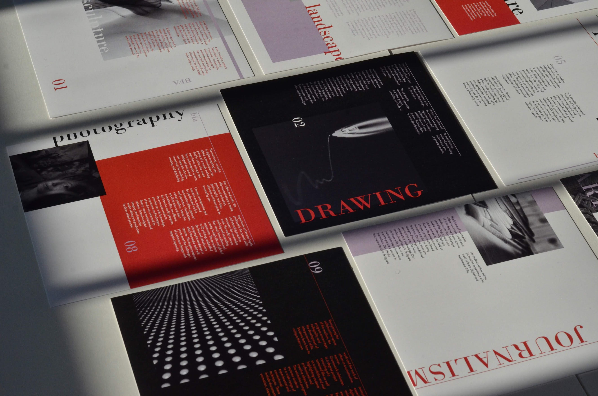
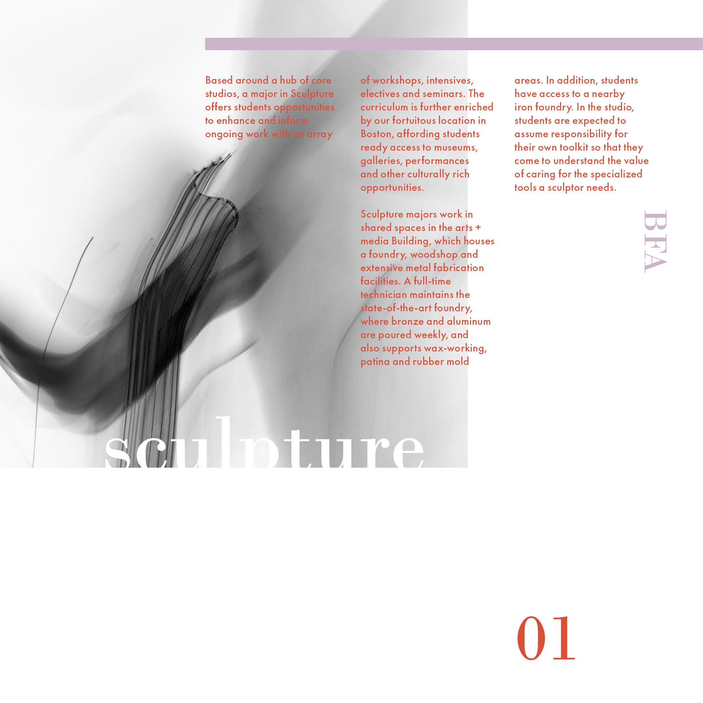
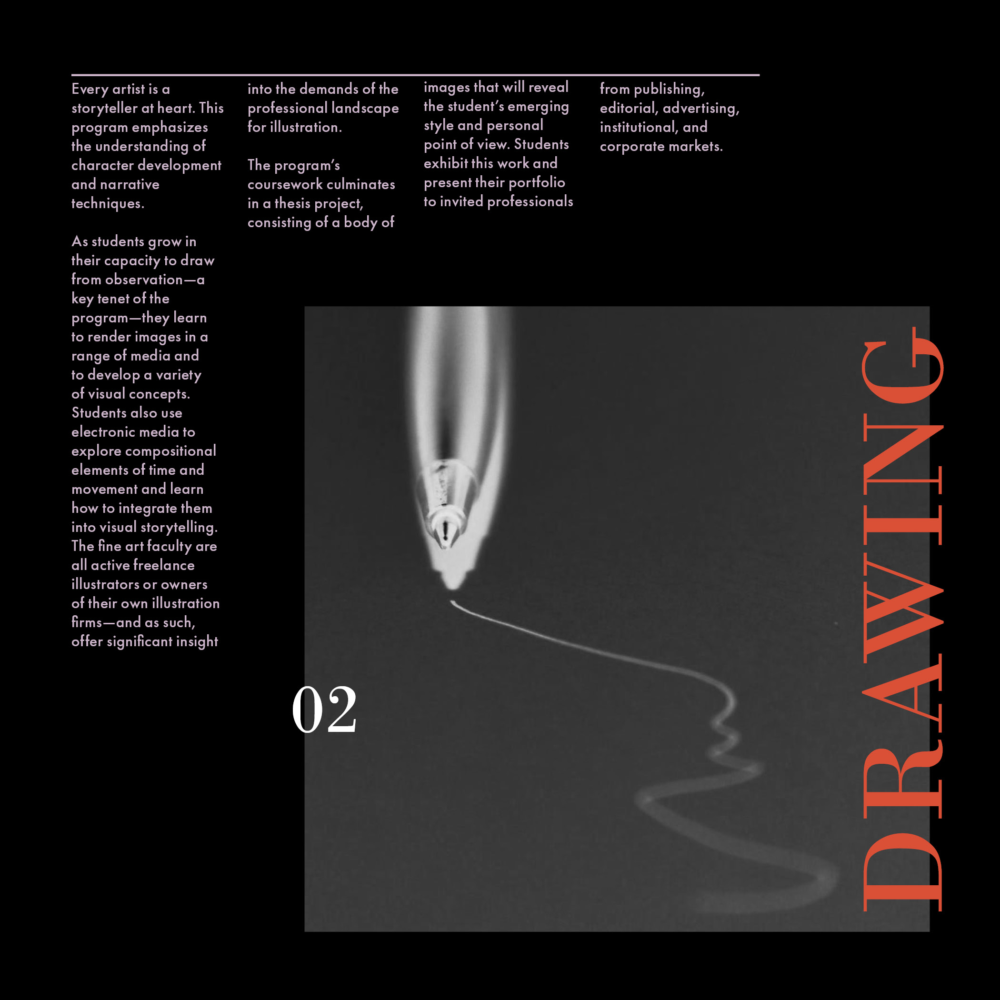
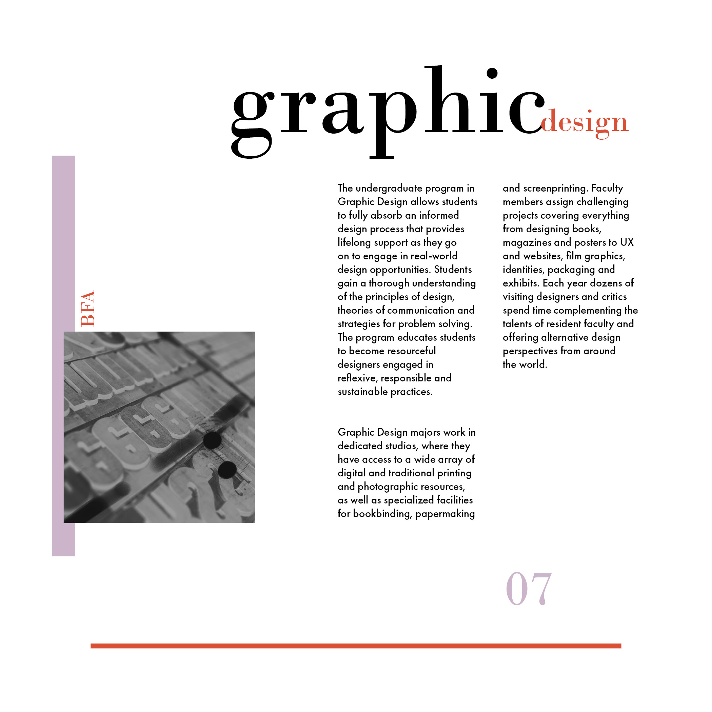
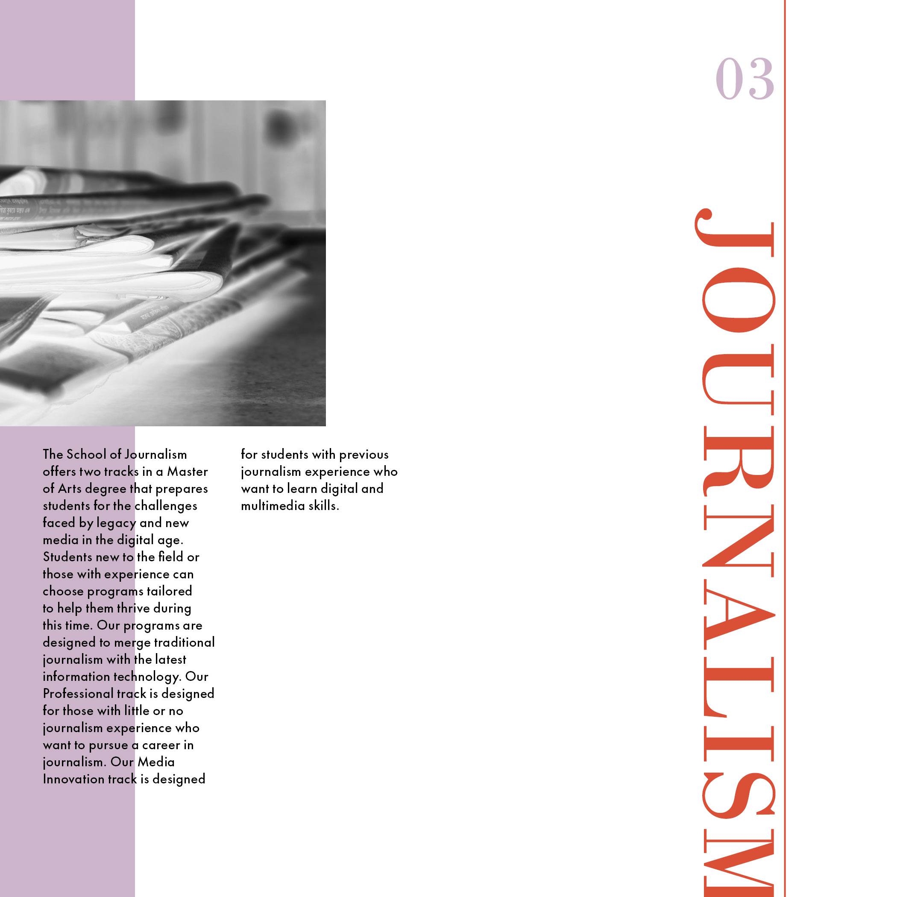
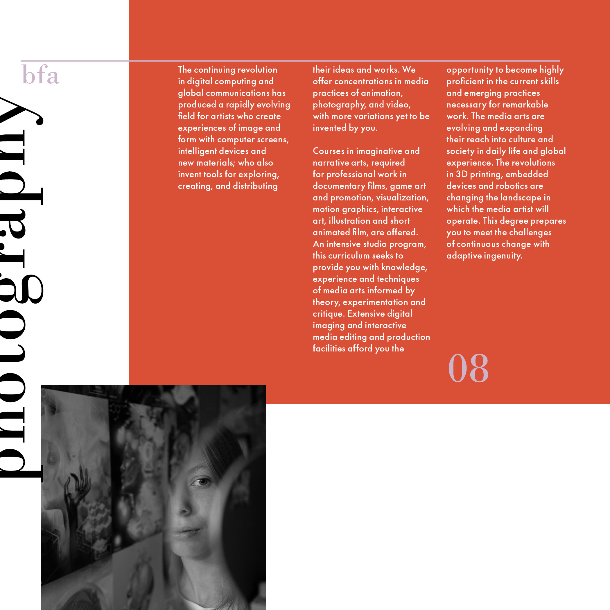
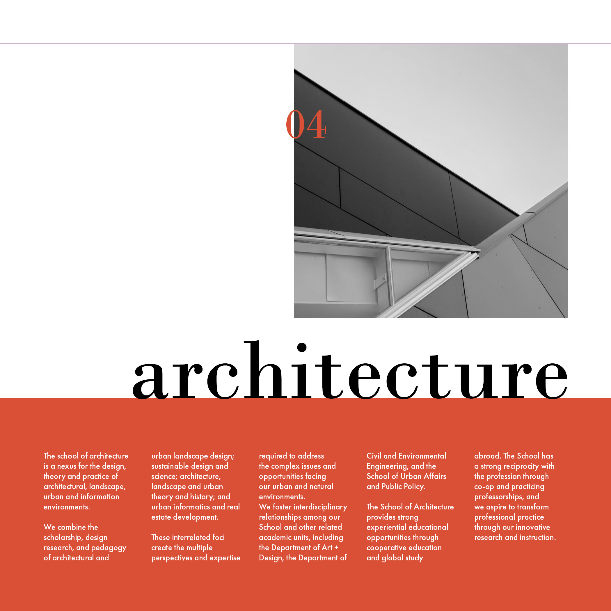
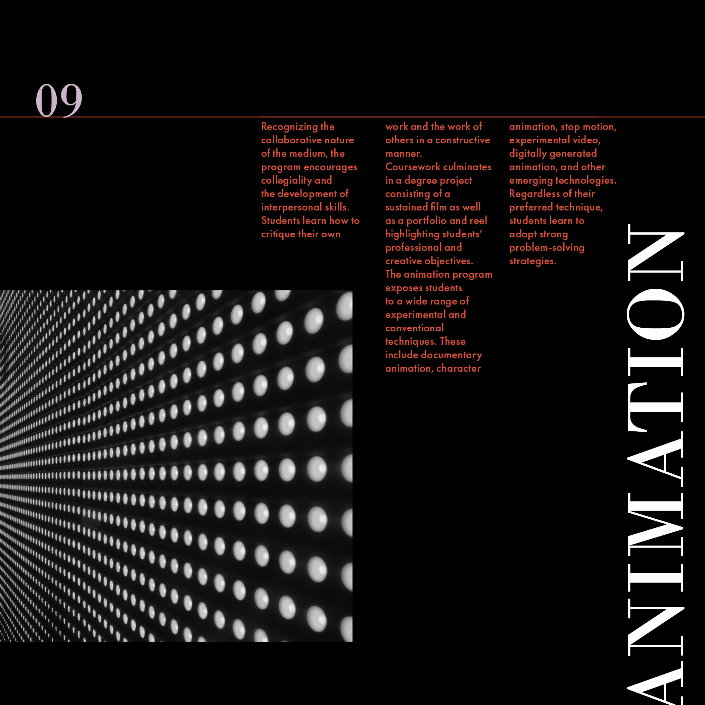
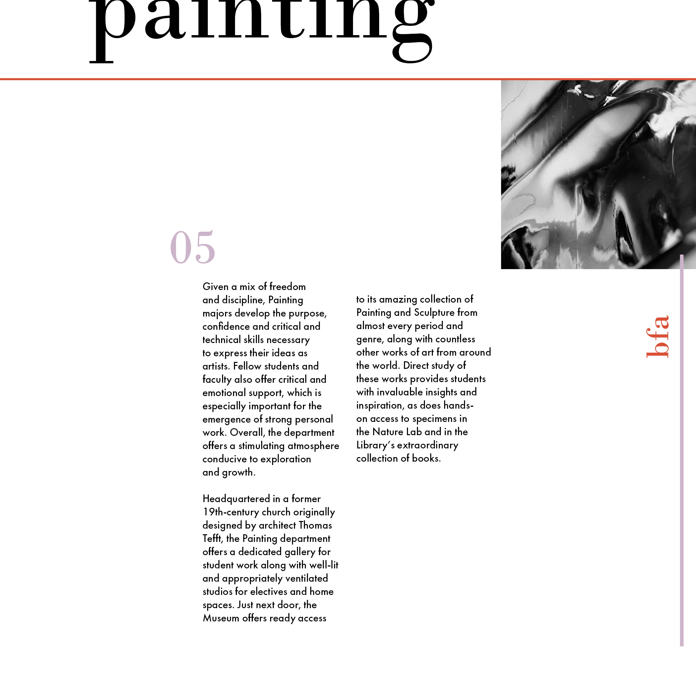
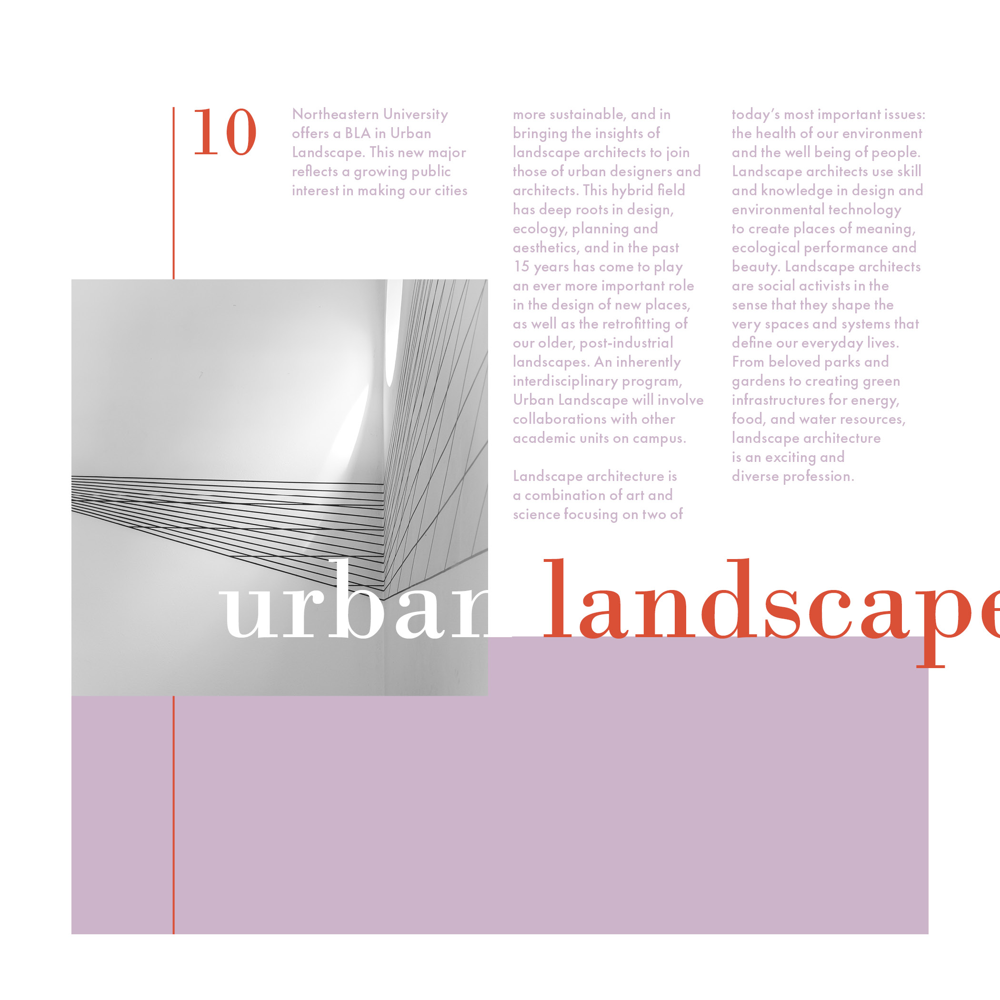

A brochure created for my Typography I class, showcasing 10 departments of the Northeastern College of Art and Design. The project focused on pacing and continuity, which I achieved through a limited color palette and repeated elements such as thin rules and black and white images.

Systems Project
A design system advertising an art school.
December 2020
Designer
Graphic Design | Collateral Design
Adobe Photoshop | Illustrator









